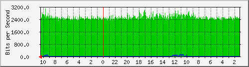
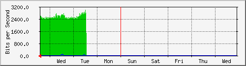
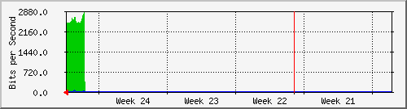
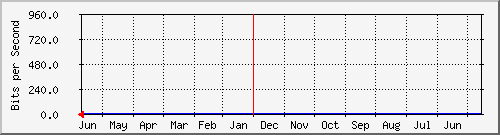

nuevo4
| System: | FW-CDP-E3.default.domain.invalid in 10.1.32.20 |
| Maintainer: | |
| Description: | Adaptive-Security-Appliance-'axtel_correo'-interface |
| ifType: | ethernetCsmacd (6) |
| ifName: | axtel_correo |
| Max Speed: | 12.5 MBytes/s |
| Ip: | 10.1.78.60 (No DNS name) |
Estadísticas actualizadas el Jueves 24 de Junio de 2021 a las 10:30,
'FW-CDP-E3.default.domain.invalid' ha estado funcionando durante 19 days, 9:38:25.
Gráfico diario (5 minutos : Promedio)

|
Máx |
Promedio |
Actual |
| Entrante: |
3096.0 b/s (0.0%) |
2528.0 b/s (0.0%) |
2656.0 b/s (0.0%) |
| Saliente: |
112.0 b/s (0.0%) |
8.0 b/s (0.0%) |
0.0 b/s (0.0%) |
Gráfico semanal (30 minutos : Promedio)

|
Máx |
Promedio |
Actual |
| Entrante: |
3008.0 b/s (0.0%) |
2552.0 b/s (0.0%) |
2712.0 b/s (0.0%) |
| Saliente: |
80.0 b/s (0.0%) |
8.0 b/s (0.0%) |
32.0 b/s (0.0%) |
Gráfico mensual (2 horas : Promedio)

|
Máx |
Promedio |
Actual |
| Entrante: |
2848.0 b/s (0.0%) |
2464.0 b/s (0.0%) |
2504.0 b/s (0.0%) |
| Saliente: |
32.0 b/s (0.0%) |
0.0 b/s (0.0%) |
0.0 b/s (0.0%) |
Gráfico anual (1 día : Promedio)

|
Máx |
Promedio |
Actual |
| Entrante: |
944.0 b/s (0.0%) |
944.0 b/s (0.0%) |
944.0 b/s (0.0%) |
| Saliente: |
0.0 b/s (0.0%) |
0.0 b/s (0.0%) |
0.0 b/s (0.0%) |
| VERDE ### |
Tráfico entrante en Bits por segundo |
| AZUL ### |
Saliente:going Traffic in Bits per Second |